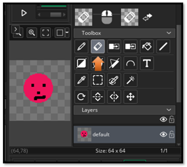

~1 Introduction to Game Maker~
1/12/2026
Entering the Interface: The Storm Before the Calm
This is the page you will see when you start
For a beginner, you want to choose Blank Game. You can name it My First Game. And hit Let’s Go
Game Maker greets you like a wizard’s workshop mid-explosion. Panels everywhere. Tabs you didn’t ask for. A room that seems to exist but isn’t visible. Here’s how to breathe through it:
What You See (and What It Means)
1. Workspace: The big blank area. This is where your rooms, objects, and code will appear.
2. Asset Browser (right side): Your scroll rack. This holds all your assets—sprites, objects, rooms, sounds.
3. Top Bar: Where you run the game, save, and switch modes.
4. Layers Panel (left side): Only shows up when editing rooms. It’s your painter’s palette.
Double-Click on the Rooms in the right panel. Then double click on the room that pops up below it. You can rename your room by double clicking on it.
When you double click on my_first_room in the list, you will then see the instance layer pop up on the left side of the screen. You have to make a new layer for everything that you want to move independently of one another. Hit the plus key to add a new layer to your room.
Tip: Close any tabs you don’t understand yet. You can always reopen them. This is your scroll, not theirs.
Preparing Your First Sprite: The Face of the Hero
Let’s make a sprite. Not a perfect one—just something that exists. This is your first act of creation.
Steps to Create a Sprite
Right-click “Sprites” in the Asset Browser: Create >Sprite
Name it sprite_hero_idle (naming matters later)

double click on your new sprite in the Asset Browser, and you should see the name in the center area with a section to work with your new sprite.
Click “Edit Image” → You’ll enter the sprite editor
choose your tool to draw with from the brush pallet. And your color

Draw something simple: A dot, a square, a smiley face. I choose the largest circle for a face
Now if you do not like it, choose the size of the eraser tool in the brushes section. Yes, the size of the eraser tool is first set with the brush tool. Then go to the bottom of that panel, to find your eraser tool.

Closing the panel, or switching to another panel will save the sprite automatically.
If you want to save the entire project, through the file menu, you will need to come out of edit mode. It wants to save your sprite first.
That’s it for this first chapter, next week we will get our little sprite to enter the room.